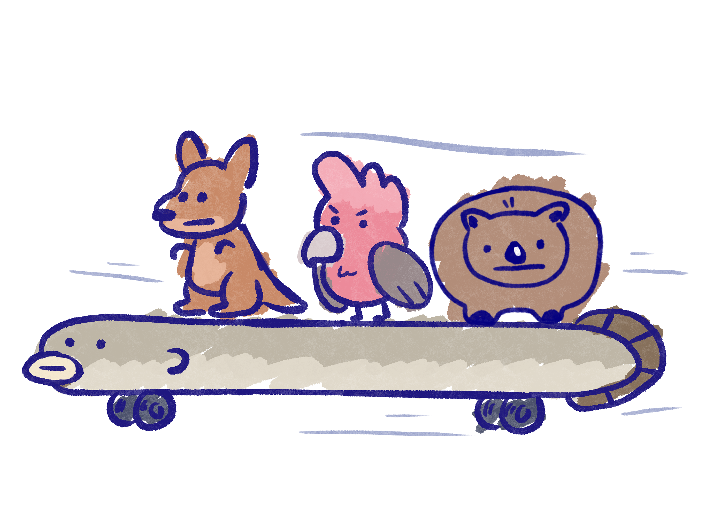

<html>
<head>
  <style>
    body {
      background-image: url("img/tadpole_bg.png");
      background-repeat: no-repeat;
      background-size: cover;
    }
   </style>
  </head>
</html>
<header>
  <h1>Tadpole is very happy!</h1>
  <p>La-la-la, la la, la-la-la, sing along! I love to sing! </p>
</header>

    
<h1> Tadpole:</h1>
   <p style="font-size:25px;"> I used to be made fun of for sounding different from the other Tadpoles. <br> I was ostracised but still wanted to be accepted so I hung around the other tadpoles. <br> One day I noticed these snakes slithering around the area and alerted the other tadpoles with my unique voice.<br> That day I gained many friends and learned to accept my unique voice. <br> I love singing so let me sing you the next clue to find Eel:
<br>A lazy eel is fast asleep by the building that connects,
<br>By the doors there are some stairs, go down it’s not complex,
<br>A little red house it hides itself in, 
<br>But what is not hidden is its tail fin.   
       </p>

<footer>
   <p>Copyright © 2023
    <br>All rights reserved.</p>
</footer>
    